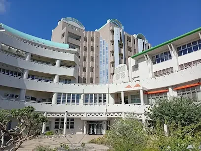
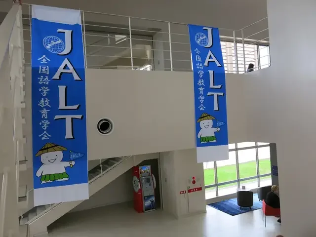
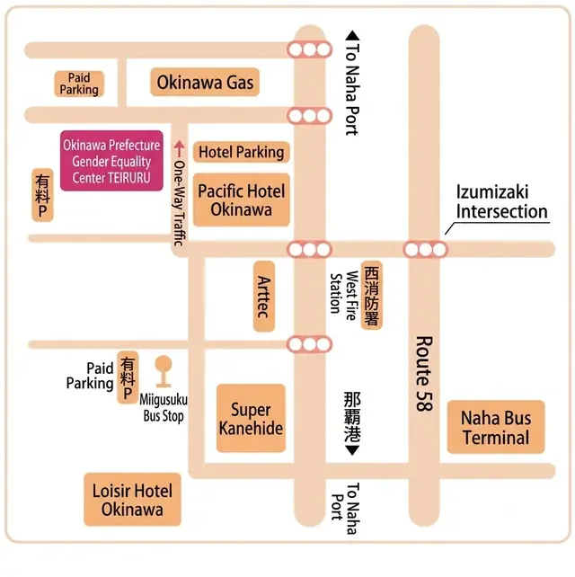
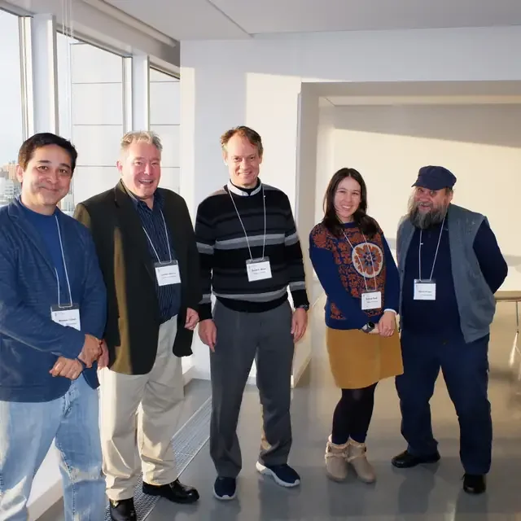
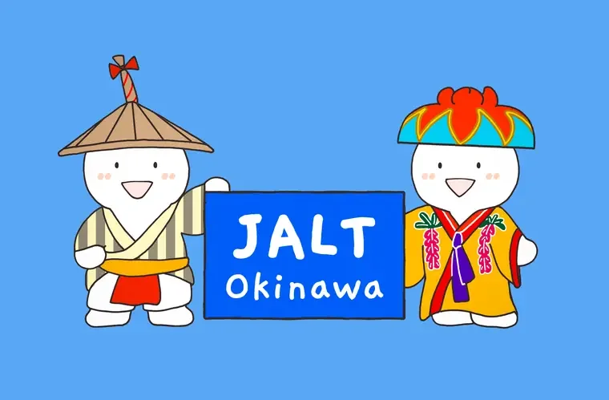

International Conference on Trends in Language Teaching
Innovations in Language Education and Culture. Skip the shoveling: trade snow boots for sandals and spend the last days of the year on Okinawa's warm beaches while you learn.

About the Conference
Where language teaching is heading next, in the heart of the holiday season
Okinawa JALT welcomes language teachers, researchers, and graduate students from across Japan and beyond for three days of presentations, workshops, and conversation on where language teaching is heading next, right in the heart of the holiday season. The program brings together in-person attendees and digital presenters at 沖縄県男女共同参画センター てぃるる (TIRURU) in Naha City.
Past editions have covered ground like classroom technology, motivation and engagement, materials design, and research from teachers and scholars working across Japan and the region. Since the call for presentations is still open, this year's program will be shaped by whoever submits. Between sessions, Naha's beaches, Shuri Castle, and Kokusai-dōri are a short trip away: a rare chance to pair serious professional development with a few warm days between Christmas and New Year's.
The chapter has served language educators in the Ryukyu Islands since 1980 (one of the earliest JALT chapters outside the mainland) with two core missions that still guide the conference today: professional development for teachers, and promoting language education across the local community.
Submit your proposal
Where & When
Event details
| Dates | December 26–28, 2026 |
|---|---|
| Format | In-person and digital presentations |
| Venue | TIRURU – Okinawa Prefectural Gender Equality Center 沖縄県男女共同参画センター てぃるる 3-11-1 Nishi, Naha, Okinawa 900-0036, Japan 〒900-0036 沖縄県那覇市西3丁目11番1号 |
| Submission deadline | Saturday, November 7, 2026 |
| Questions | okijalt@gmail.com |


Getting There
TIRURU sits near Izumizaki Intersection on Route 58 in central Naha
It is a short walk from Asahibashi station on the Yui Rail monorail and within walking distance of the major Naha hotels.
- Yui Rail: Asahibashi station, approx. 10 min walk
- Bus: Miigusuku bus stop, nearby on Route 58
- Parking: Paid parking available adjacent to the building and at Pacific Hotel Okinawa (see area map)

Trends in Language Teaching, Through the Years
The event has brought scholars to the islands roughly every few years since 2014, each edition shaped by the questions occupying language classrooms at the time
- 2014Foundations of excellenceOkinawa Christian University, Nishihara. Keynotes from Toyo Gakuen University and Nanzan University, centered on active learning and student engagement.
- 2015Diverse perspectivesKeynote speakers from Meiji University and Saga University explored mobile learning and digital integration in the language classroom.
- 2017Innovation and excellenceNaha and Nishihara. Keynotes from Miyagi Gakuin Women's University and UC Irvine examined positive psychology in language learning.
- 2020Scaffolding student voiceOkinawa Christian University, Nishihara. A keynote from Temple University, Japan, alongside 20+ poster presentations and published proceedings.
- 2026This year's holiday conference 🎄TIRURU, Naha City. Three days of in-person and digital presentations over the holiday week: the next chapter in a decade-plus tradition.
Moments from Past Conferences




Registration & Fees
A presenter registration fee is required for all accepted presenters. Once your proposal has been accepted, select the category that applies to you and click Pay with PayPal to complete your payment.
JALT National Member
In-person
For current JALT national members presenting in person.
Digital Presenter
Pre-recorded video
For all presenters submitting a pre-recorded video.
Presenter Information
For accepted presenters
Time slot
Each regular presentation slot is 25 minutes total: 20 minutes for the presentation followed by a 5-minute question-and-answer period. Time limits will be strictly enforced. Please be mindful of your time so that adequate time remains for audience questions and for the next presenter to begin on schedule.
Session facilitator
A session facilitator will be present in the room and will give you a 5-minute warning before your time is up. At the end of the Q&A, the facilitator will close the session and assist with the transition to the next presenter.
Before your session
Please arrive at your presentation room at least 10 minutes before your session to connect your laptop, test the display, and meet the room facilitator.
Slides & backups
We recommend 16:9 widescreen format for slides; this matches the projector and screen setup in all rooms. Bring a backup copy of your slides on a USB drive or in cloud storage (Google Drive, Dropbox, etc.) in case of any last-minute technical issues.
Handouts
If you plan to distribute handouts, please bring enough printed copies for your expected audience, or share a QR code or link during your session. The venue does not provide printing services.
What is a poster presentation?
A poster presentation is a visual display of your research or teaching idea, mounted on a board in a shared exhibition area. Rather than standing at the front of a room, you stand beside your poster while attendees circulate, read, and stop to discuss your work with you informally. Poster sessions are often among the most productive parts of a conference for networking and in-depth conversation.
Poster size and format
Posters must be prepared in A0 size (841 mm × 1189 mm / 33.1″ × 46.8″), portrait orientation. This is the standard international conference poster size and is the maximum the display boards will accommodate. Please confirm your poster dimensions before printing.
What to include on your poster
- Title: clear and large enough to read from a distance
- Author name(s) and affiliation(s)
- Introduction / Background: brief context and the problem you are addressing
- Research question or purpose: one or two sentences
- Methodology: a concise description of your approach
- Results or findings: use charts, tables, or visuals where possible
- Discussion / Implications: what your findings mean for teaching or research
- Conclusion: key takeaway in two or three sentences
- References: abbreviated list of key sources
- Contact information: your email so interested attendees can follow up
Keep text minimal. Visitors typically spend two to three minutes reading a poster before deciding whether to engage; clarity and visual appeal matter.
Session length & presence
The poster session runs for 50 minutes. Presenters are expected to be present beside their poster for the full duration. Please arrive early to mount your poster before the session begins.
Mounting materials
Magnets and thumbtacks will be provided at the venue. You do not need to bring your own; there is no need to pack them in your luggage.
What is a digital presentation?
Digital presentations are pre-recorded video submissions screened at the conference. Recordings are played back in a designated screening area so that in-person attendees can view them at their convenience during the event.
Technical requirements
| File format | MP4 only |
|---|---|
| Aspect ratio | 16:9 (widescreen) |
| Maximum resolution | 720p (1280 × 720); smaller file sizes preferred |
| Target length | 15–20 minutes |
| File naming | Name your file using your registered name followed by your presentation title, separated by an underscore. Replace spaces with hyphens and use no special characters. Example: Fewell-Norman_Innovations-in-Listening-Instruction.mp4 |
Content guidelines
Your video should follow the same structure as an in-person presentation: introduce the topic, describe your approach or research, present your findings or ideas, and close with implications for language teaching practice. Aim to speak clearly and at a moderate pace; international audiences will be watching.
- Keep your slides on screen throughout. Do not show a blank slide between sections
- Use 16:9 widescreen slide format to match the screen recording
- Include your name and affiliation on the opening slide
- A brief on-camera introduction (5–10 seconds) is optional but recommended
Submission
Full submission details, including the upload link and deadline, will be sent to registered digital presenters by email after your registration is confirmed. Please submit your video at least one week before the conference to allow time for technical checks. If you have not received instructions two weeks before the event, contact us at okijalt@gmail.com.
Q&A availability
Digital presenters are strongly encouraged to be available online (via Zoom or email) during the conference dates in case in-person attendees wish to ask follow-up questions. We will share a schedule of when your video is being screened so you can be on standby. Details on the Q&A format will be communicated before the event.
Equipment provided at the venue
| Item | Provided? | Notes |
|---|---|---|
| Projector | ✓ Yes | All regular presentation rooms |
| Screen / display | ✓ Yes | All regular presentation rooms |
| Standard HDMI cable | ✓ Yes | Full-size HDMI only |
| Unusual connector adapters | ✗ Not guaranteed | Bring your own if needed |
| Microphone | ✓ Yes | Provided in larger rooms |
| Wi-Fi | ✓ Yes | Login details provided at check-in |
| Laser pointer | ✗ No | Please bring your own |
| Poster magnets & thumbtacks | ✓ Yes | No need to pack your own |
| Poster display boards | ✓ Yes | Portrait orientation, A0 maximum |
Connectivity
HDMI cables will be available in each room, but we can only guarantee a standard full-size HDMI connection. If your laptop requires USB-C, Mini DisplayPort, Mini HDMI, or a proprietary adapter, please bring your own. We cannot guarantee adapters for all connector types will be available on the day.
Wi-Fi will be available throughout the venue. Login details will be provided in your conference materials on arrival.
Accessibility & special requirements
If you have any accessibility requirements or need technical accommodations, please contact us in advance at okijalt@gmail.com so we can make appropriate arrangements.
Recording policy
Sessions will not be officially recorded unless you have opted in. Please check your acceptance confirmation for details.
Contact on the day
A conference committee member will be identifiable at the registration desk throughout the event. Please approach them with any last-minute questions or technical concerns.
Conference proceedings & journal
All presenters (regular, poster, and digital) are invited to submit a paper to the Okinawa JALT Journal for consideration in the conference proceedings. Submission is optional but encouraged as an opportunity to share your work with a wider audience. See the journal guidelines for submission details and deadlines.
Still Have Questions?
Quick answers
Can I present in Japanese?
Yes, presentations in Japanese are welcome. Please note in your proposal submission that your presentation will be in Japanese so we can schedule it appropriately.
When will I hear whether my proposal has been accepted?
We review submissions as they arrive and aim to notify you as quickly as possible, so submitting early is the best way to hear back sooner. Our goal is to confirm all submissions by the November 7, 2026 deadline, but many notifications will go out before then. If you submitted and haven't heard from us within two weeks, feel free to email okijalt@gmail.com.
Can I attend the conference without presenting?
Absolutely. You are welcome to attend the conference whether or not you are presenting. We encourage anyone interested in trends in language teaching to come along, join the sessions, and connect with fellow educators. Registration details for non-presenter attendees will be announced closer to the event.
How many presentations can I give?
Due to scheduling and space limitations, each participant is limited to one presentation. This applies to all presentation formats: regular, poster, and digital.
I have a question not answered here. Who do I contact?
Email us at okijalt@gmail.com and someone from the conference committee will get back to you as soon as possible.
Conference Committee
Organization

Call for Presentations
Share your research, classroom practice, or workshop idea with language teachers from across the region. Submissions are open to both in-person and digital presenters. All presenters are also welcome to submit their work for publication in the Okinawa JALT Journal afterward.
Submit your proposalSubmission deadline: Saturday, November 7, 2026
🎄 Serving language educators in the Ryukyu Islands since 1980. Happy holidays!